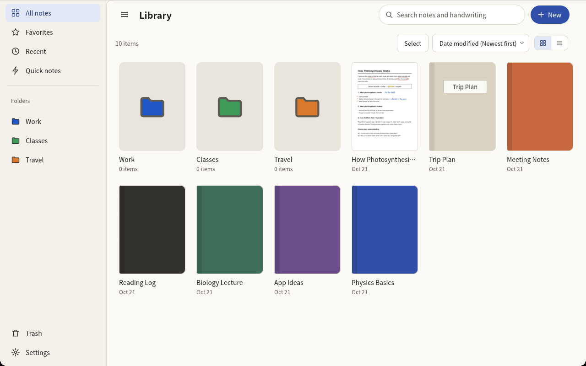
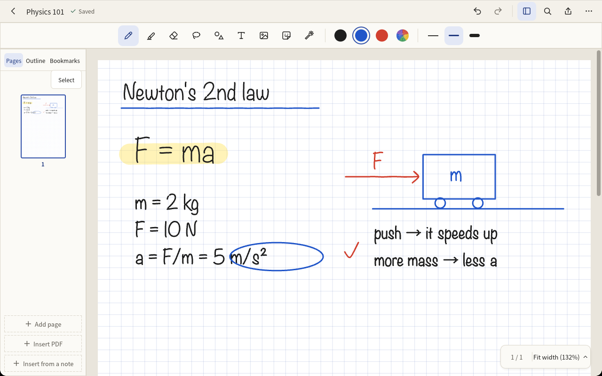
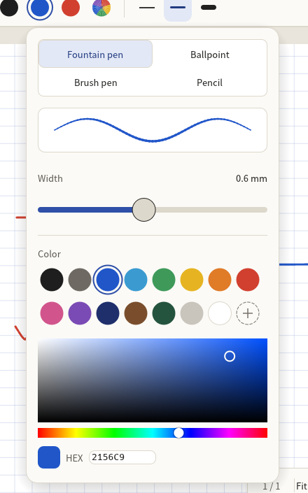
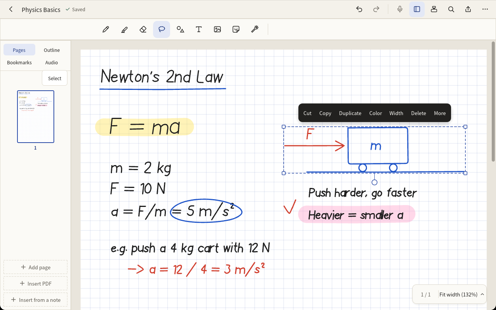
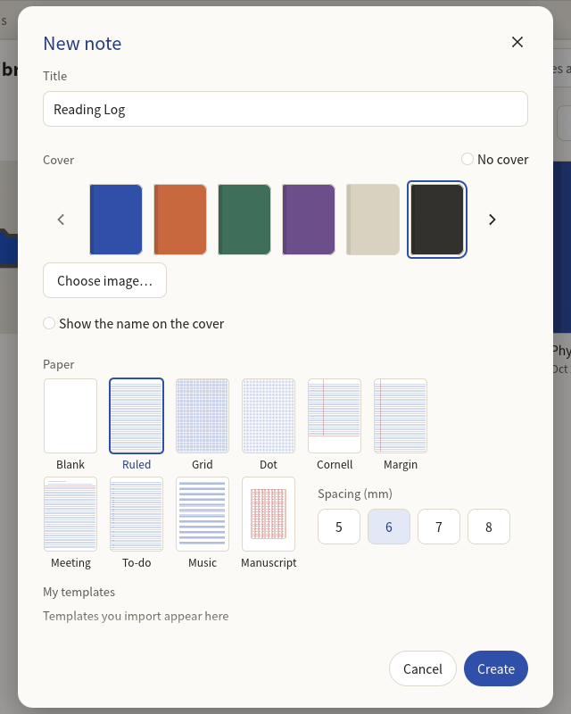
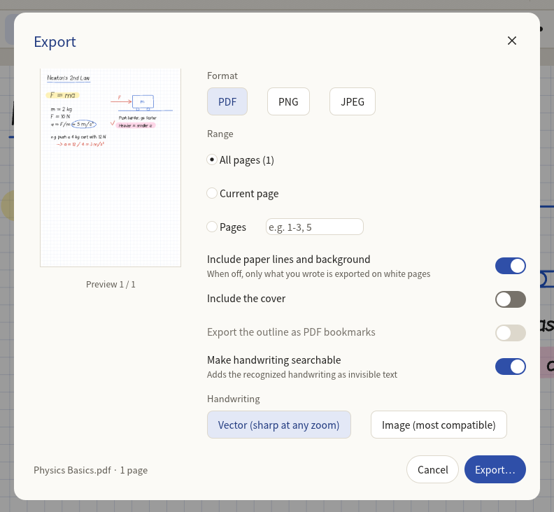
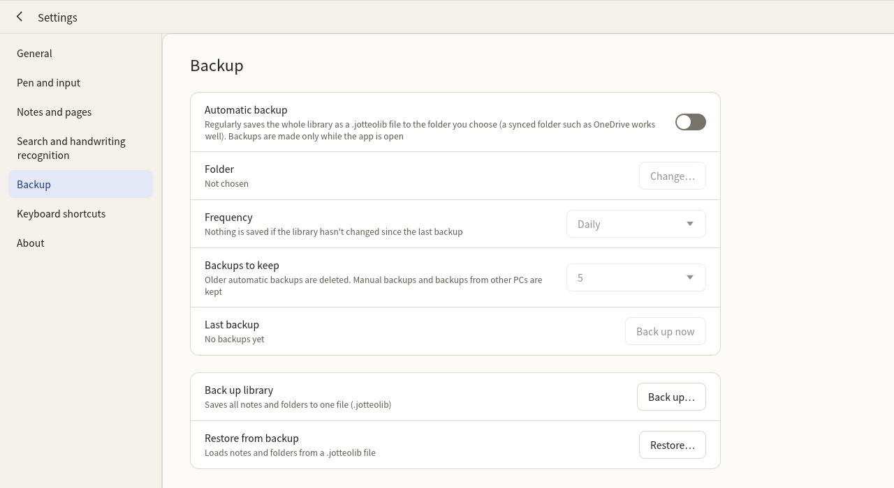

Help
How to use Jotteo. In the app, press F1 to open this page, and Ctrl+/ to see all keyboard shortcuts.
The screens
Library
The first screen you see when Jotteo starts. It lists your notes and folders.

- Sidebar: All notes, Favorites, Recent, Quick notes, Folders, Tags, Trash and Settings. In a narrow window it is hidden; open it with ≡ at the top left of the list
- Search box (top): finds note and folder names, text in text boxes, handwriting and text in PDFs (see Search and handwriting recognition)
- New (top right): create a note, quick note or folder, or import a PDF, image or .jotteo file
- Above the list, choose the sort order (Name, Date created, Date modified, Manual) and switch between grid view and list view
The note screen (editor)
The screen for writing, shown when you open a note.

- Header: Back to library, the note name and save status, Undo and Redo, Pages, Search in note, Export and More (Scrolling direction)
- Toolbar: Pen, Highlighter, Eraser, Lasso, Shapes, Text, Image, Elements and Laser pointer, plus colors and widths for the current tool. You can place it at the top, left, right or floating (Toolbar position under Settings > Pen and input)
- Page panel (left): the Pages, Outline and Bookmarks tabs
- Status (bottom right): current page / total pages and the zoom level. After you jump to another page, a Back or Forward button appears at the bottom left
There is no need to save. Everything you write is saved automatically.
Turn on Left-handed mode in Settings to put the page panel on the right and the status at the bottom left.
Pen, touch and mouse
Write with the pen and move around with your fingers. While the pen is near the screen, your palm is ignored.
| Action | Result |
|---|---|
| Pen tip | Write, erase or select with the current tool |
| Rub with the eraser end of the pen | Erase (only what you touch; you can switch to whole strokes in Settings) |
| Hold the pen's side button while writing | Eraser while held (or Lasso / Previous tool in Settings) |
| Press the pen's top button (Surface Pen and others) | Create a quick note |
| Double-click the pen's top button | Switch to the eraser and back (or Previous tool, with Pen double-tap in Settings) |
| Drag with one finger | Scroll |
| Pinch or drag with two fingers | Zoom or scroll |
| Tap with two fingers | Undo |
| Tap with three fingers | Redo |
| Press and hold / right-click | Menu (Paste, Add page and more). In Read mode, or when "Only write with a pen" is on, press and hold on PDF text with a finger to select the text |
| Drag with the left mouse button | Write, erase or select with the current tool |
| Drag with the middle button / hold Space and drag | Pan |
| Mouse back / forward buttons | Go back / forward in the page history |
| Wheel / Shift+wheel / Ctrl+wheel | Scroll vertically / horizontally / zoom |
| Two fingers / pinch on the touchpad | Scroll / zoom |
To write with your finger, turn off "Only write with a pen" under Settings > Pen and input. Then one finger writes and two fingers scroll and zoom.
The pen's top button works while you use Jotteo, once the Windows pen settings let apps override the shortcut button. To start Jotteo with the top button when it isn't running, assign Jotteo to the top button in the pen settings. You can open the pen settings with Open pen settings next to Pen top button under Settings > Pen and input.
Tools
Pen P
Choose a fountain pen (width changes with pressure), a ballpoint (nearly constant width) or a brush pen (width changes a lot with pressure, with tapered starts and ends). The toolbar shows three colors and three widths; click one to switch (1–3, Shift+1–3).

To change a color or width, click the selected one again (or double-click another one; press and hold with a finger) to open Pen settings. The pen type, width (0.1–5.0 mm) and color (palette, HSV, HEX or recent colors) you choose replace that button.
- Draw and hold to make shapes: after drawing a line, keep the pen down and hold it still for 0.5 seconds to turn it into a line, circle, rectangle or other shape. Move the pen before lifting it to adjust the size or direction. Use Undo to get your original line back (you can turn this off with "Draw and hold to make shapes" in Settings)
- Stroke stabilization: smooths out small wobbles in your lines. Set the strength with Stroke stabilization under Settings > Pen and input
Highlighter H
Draws see-through lines underneath your pen writing, so text is never covered. Change colors and widths the same way as the pen (width 1–15 mm). After highlighting, keep the pen down and hold it still for 0.5 seconds to make the line straight ("Hold the highlighter to straighten" in Settings).
Eraser E
In the toolbar, choose the mode (Stroke: erases every stroke it touches, Partial: erases only where you rub) and the size (small, medium, large). Turn on "Erase highlighter only" next to them to erase only highlighter strokes and leave your pen writing alone. The eraser does not erase text boxes or images; select them with the lasso and delete them.
Lasso L
Selects the strokes, shapes, text boxes and images you circle. With a mouse, hold Alt while dragging to select a rectangle. Ctrl+A selects everything on the current page.

- Move: drag inside the frame, even onto another page. Arrow keys move by 1 mm, Shift+arrow by 10 mm
- Resize: drag a corner handle. The aspect ratio is kept (hold Shift to change it)
- Rotate: drag the handle below the frame. It snaps every 15° (hold Shift to rotate freely)
- Menu above the frame: Cut, Copy, Duplicate, Color, Fill (with closed shapes), Width (with strokes or shapes), Crop (with a single image), Delete and More
- More: Convert to text and Copy as text (see Search and handwriting recognition), Bring to front, Bring forward, Send backward, Send to back, Lock and Unlock, Copy as image and Save as image, and Add to elements
What you copy can be pasted into other notes too (it is kept until you close the app). Copy as image copies the selected area as it looks on screen, so you can paste it into other apps. Save as image saves it as a PNG file.
Lock shapes, text boxes and images so they can't be moved or deleted by accident. Locked items can still be selected. When only locked items are selected, the menu shows Unlock in place of Delete; otherwise choose Unlock under More.
Shapes S
Turns what you draw into a line, arrow, circle, ellipse, triangle, rectangle, polygon or arc when you lift the pen. Lines that can't be recognized stay as handwriting. In the toolbar, choose the line color and width and the Fill (No fill, Same as line (translucent) or another color). With the Shapes tool, tap the outline of a shape to select it, then drag the vertex and end handles to change its form.
Text T
Click a page to add a text box and type with the keyboard (drag to set its width). With the Text tool, you can also press Enter to add a new box in the middle of the screen. Click outside or press Esc to finish. Move a text box with the lasso; click it with the Text tool to edit it again (or press Enter or F2 when it is the only item selected).
While editing, a format bar appears above the box.
- Characters: font, size, color, bold, italic, underline and strikethrough
- Alignment and spacing: align left, center or align right, and line spacing (1.0, 1.15, 1.5 or 2.0)
- List: bulleted or numbered lists, with Increase indent and Decrease indent (Tab / Shift+Tab). You can also start a list by typing "- " or "1. " at the start of a line
- Border and background: background color, border color and width, and rounded corners. Set as default style uses the current formatting for new text boxes
Image
Click the image button in the toolbar and choose files (PNG, JPEG, GIF, BMP, WebP or HEIC). You can also drag files onto the note or paste a copied image (Ctrl+V). The inserted image is selected, so you can move it like a lasso selection.
- Crop: select a single image and choose Crop in the menu to set the visible area. The original image is kept, so you can crop again at any time
- Insert screenshot: right-click (or press and hold) a page and choose Insert screenshot to open the Windows snipping screen. The screenshot is placed where you opened the menu
Elements
Save handwriting, shapes and images you use often, and place them again whenever you like. Select them with the lasso and choose More > Add to elements. Click Elements in the toolbar to open the list; click an element to place it in the middle of the current page, or drag it to where you want it. You can sort elements into collections (+ at the bottom of the list creates a new collection). Right-click (or press and hold) an element to rename, move or delete it.
Laser pointer K
Use it to point things out while showing your screen. The red line fades after a second and is never saved in the note. In the toolbar, choose Trail (draws a line) or Dot (just a dot).
More
- Q: switch back to the previous tool
- Hold Space: pan by dragging
Pages and viewing
Add, delete and reorder pages
- Add: Add page below the page panel (at the end), Ctrl+Enter (after the current page), or Add page before / after in the menu you get by pressing and holding or right-clicking a page. You can also pull down past the bottom of the last page (Add pages automatically in Settings)
- Thumbnail menu (right-click or press and hold): Duplicate page, Copy page, Copy as image, Paste page, Move to another note, Copy to another note, Change paper, Adjust margins, Clear page, Bookmark, Add to outline, Rotate page and Delete page
- Reorder: drag thumbnails in the page panel
- Select several: Ctrl/Shift+click or Select in the panel, then duplicate, copy, move, rotate, change the paper of, or delete them
Deleted pages can be restored with Undo.
Change the paper, size and orientation
- Change paper: besides the paper type, spacing and paper color, you can change the size (A4, A5, B5, Letter, Screen size or Custom) and orientation (Portrait or Landscape). Apply it to This page, the selected pages or All pages. What you wrote stays where it is
- Rotate page: rotates the page 90° clockwise each time, together with what you wrote on it. Useful for fixing sideways PDF pages
- Adjust margins: adds blank white space to the right and bottom of PDF and image pages for writing
Exchange pages with other notes
- Move to another note / Copy to another note: puts the selected pages at the end of the note you choose
- Insert from a note: use Insert from a note below the page panel (at the end) or Insert from a note after in a page's menu, choose a note, then choose the pages to insert
- When notes are open in two windows, drag pages from the page panel or a lasso selection onto the note in the other window to copy them (hold Shift when you drop to move them instead)
Outline
Give pages headings and list them under the Outline tab of the page panel. Choose Add to outline (Add page to outline on the page itself) in a thumbnail's or page's menu and type a name. Click an item to go to that page. Right-click (or press and hold) an item to Rename, Indent, Outdent or Remove from outline it. Indented items are grouped under the item above them. Bookmarks in a PDF are added to the outline when you import it.
Navigating and viewing
- Go to page: click "2 / 12" at the bottom right or press Ctrl+G and type a number. PageUp / PageDown go to the previous or next page
- Back and forward: after jumping to another page from the outline, a thumbnail, a bookmark, the page number or a PDF link, press Alt+← or click Back at the bottom left to return (Alt+→ goes forward)
- Bookmarks: the ribbon at the top right of a page or Ctrl+B. Bookmarked pages appear under the Bookmarks tab of the page panel
- Zoom: 25–800%. Click the zoom level at the bottom right for Fit width, Whole page or 100% (actual size)
- Scrolling direction: under More > Scrolling direction in the header, choose for each note whether pages scroll vertically or flip horizontally one at a time. When flipping, swipe with a finger or press ← / →. Set the default for notes under Settings > Notes and pages
- Search in note (Ctrl+F): finds text in text boxes, handwriting and text in PDFs, and highlights it in yellow on the page
- Read mode (Ctrl+R): turns writing off so the pen only scrolls, so you don't leave stray marks while reading. You can still select PDF text and follow links
- Full screen (F11): hides the header and page panel and floats the toolbar. Press F11 or Esc to return
- Paper in dark mode: turn on "Invert paper in dark mode" in Settings to show paper and ink in dark colors with the dark theme. Exports and printing keep the original colors
Organizing notes and folders
Create a note
Choose New > Note or press Ctrl+N, then pick a title, cover, paper, size, orientation and paper color. Your choices are remembered for the next note.

- Paper: Blank, Ruled, Grid, Dot, Cornell, Margin, Meeting, To-do, Music (staff paper) or Manuscript (vertical Japanese manuscript paper). For ruled, grid, dot and some other papers you can also choose the line spacing (5–8 mm)
- My templates: choose Import template… and pick a PDF (its first page) or an image to use it as paper. Right-click (or press and hold) a template to rename, reorder or delete it
- Cover: besides the 20 built-in covers, choose Choose image… to use any image (or the first page of a PDF) as the cover
Quick notes
Choose New > Quick note or press Ctrl+Shift+N to start writing right away. You can also create one from the menu you get by right-clicking the Jotteo icon on the taskbar, or with the pen's top button. Quick notes are kept under Quick notes in the sidebar, and one you close without writing anything is removed automatically. Move the ones you want to keep into a folder.
Folders and organizing
- Choose New > Folder to create a folder where you are. Folders can contain folders
- Right-click (or press and hold) a note or folder for Open, Open in New Window, Rename, Move, Duplicate, Add to favorites, Change cover, Tags, Note info, Export and Delete
- Drag and drop items onto folders or sidebar entries to move them. When the sort order is Manual, drag to change the order
- Use Ctrl/Shift+click or Select above the list to move or delete several items at once
Tags
Tag notes to see them together across folders. Right-click a note and choose Tags…, then pick tags, or type a name and press Enter to create one (a note can have several tags). Your tags are listed under Tags in the sidebar; click one to show only the notes with that tag. Right-click a tag in the sidebar to rename or delete it.
Change a cover
Right-click a note and choose Change cover… to pick a different cover. You can change the covers of several selected notes at once. When you export a PDF, you can also include the cover as the first page.
Open in a new window
Right-click a note and choose Open in New Window, or select it and press Shift+Enter, to open it in a separate window. Use it to compare two notes side by side or to copy pages between them. Set "On startup, show" in Settings to "Windows from last time" to reopen the windows and pages you had open when Jotteo starts next time.
Trash
Deleted notes and folders go to the Trash and are permanently deleted after 30 days (you can change this to 7 or 90 days or Forever in Settings). Right after deleting, click Undo at the bottom of the screen. In the Trash, you can restore or permanently delete each item.
Search and handwriting recognition
Search the library
The search box at the top of the library (Ctrl+Shift+F) finds note and folder names, text in text boxes, handwriting and text in PDFs. Click a match in a page to open that page with the match highlighted in yellow.
Use the buttons above the results to narrow them down.
- Type: All, Handwriting, PDF or Text
- Folder: only a folder you choose (including the folders inside it) or Quick notes
- Tags: only notes that have all the tags you choose
- Modified: Today, Yesterday, This week, Last week, This month, Last month, This year or Last year
Handwriting recognition
Jotteo reads your handwriting in the background so you can search it. It uses Windows handwriting recognition and runs only on this PC. The contents of your notes are never sent anywhere.
- Under Settings > Search and handwriting recognition, turn recognition on or off, choose the recognition language (Japanese, English or Japanese + English) and check the progress
- Recognition needs the Windows handwriting language pack for that language. If Settings says it is missing, add it from Open language settings
- The recognized text isn't shown on screen. Messy or misread words may not be found
Turn handwriting into text
Select handwriting with the lasso and use More.
- Convert to text: replaces the handwriting with a text box of the same size and color. Undo brings the handwriting back
- Copy as text: copies the recognized text so you can paste it into other apps
Importing and exporting PDFs and images
Create a note from a PDF or images
Choose New > Import PDF or image or press Ctrl+O and pick files, or drag files onto the library. Each PDF becomes one note; images are combined into one note with one image per page. You can write on these pages with the same tools as any page. The original file is copied into the note, so it's fine to delete it afterwards.
- When you pick a single PDF, you can choose which pages to import (e.g. 1-3, 5)
- For a password-protected PDF, Jotteo asks for the password when importing. After that, the note opens without a password
- Bookmarks in the PDF are added to the note's outline
- You can also send PDFs and images to Jotteo from other apps with Windows Share; they are imported as new notes
Add PDF pages to a note
Use Insert PDF below the page panel (at the end), Insert PDF after in a page's menu, or drag a PDF onto the note. To put a blank page in between, just add a page.
PDF text and links
- Select and copy text: in Read mode (Ctrl+R), drag over PDF text with the mouse, or press and hold it with the pen or a finger. While editing, if "Only write with a pen" is on, you can also press and hold with a finger. Drag the handles at both ends to adjust the selection, then choose Copy or press Ctrl+C
- Links: in Read mode, click a link in a PDF to go to the page it points to, or to open a web link in your browser. While editing, you can also tap a link with a finger that scrolls (when "Only write with a pen" is on)
Export and print
On the note screen, click Export in the header or press Ctrl+E to export a PDF or images.

- Format: PDF, PNG or JPEG. For images, choose the resolution (96, 150 or 300 dpi); two or more pages are saved as one file per page
- Range: All pages, Current page, the pages selected in the page panel, or Pages (e.g. 1-3, 5)
- Include paper lines and background: when off, only what you wrote is exported on white pages
- Include the cover (PDF): adds the cover as the first page
- Export the outline as PDF bookmarks (PDF): turns the note's outline into PDF bookmarks
- Handwriting (PDF): Vector (sharp at any zoom) or Image (looks the same in older viewers)
- Share…: exports with the chosen settings and hands the file to the Windows share screen (Mail, Teams and more)
Text in imported PDFs stays selectable and searchable after export. Press Ctrl+P to print with the Windows print dialog. To paste a single page into another app, use Copy as image in the thumbnail menu or Copy page as image in the page's menu.
Share notes as .jotteo files
In the library, right-click a note and choose Export… to save it as a .jotteo file that stays fully editable. Import .jotteo files with New > Import .jotteo, by dragging them onto the library, or by double-clicking them.
When you double-click a file, you can choose Import or Open read-only. Open read-only opens the note without adding it to your library. To keep it, click Import to library in the bar at the top. You can choose what happens every time with "When opening a .jotteo file" in Settings.
Backup and library location
Your notes are stored only on this PC. In the default location, uninstalling Jotteo also deletes your notes, so make a backup before switching PCs or uninstalling.

Back up manually
- In the library, open Settings (Ctrl+,), go to Backup, click Back up… and choose where to save. All notes and folders are saved to a single .jotteolib file, together with your tags, elements and templates (items in the Trash are not included)
- To restore, click Restore… and choose the .jotteolib file, or double-click the file. Then choose Add to current library or Replace… (replacing deletes all current notes, folders, tags, elements and templates, including those in the Trash, and can't be undone)
Backup and restore are unavailable while a note is open. Go back to the library, then open Settings.
Automatic backup
Turn on Automatic backup under Settings > Backup to regularly save the whole library as a .jotteolib file to the folder you choose. Choose a synced folder such as OneDrive to keep a copy in the cloud too.
- Frequency: Daily, Weekly or When changed. Nothing is saved if nothing has changed since the last backup
- Backups to keep: 1–30 (5 by default). The oldest automatic backups are deleted; manual backups and backups from other PCs are kept
- Backups are made only while Jotteo is open. Click Back up now to make one at any time
- To restore, choose the file with Restore…, just like a manual backup
Change the library location
Under Settings > General, click Change… next to Library location and choose a folder (an external drive, for example) to move your library there. Notes in a folder outside the app are kept even if you uninstall Jotteo. After reinstalling, choose the same folder to switch to that library. Use default location… moves the library back.
Synced folders such as OneDrive and network folders aren't recommended, because data can be damaged while syncing. To keep a copy in the cloud, use automatic backup. You can change the location only while no note is open in any window.
Settings
Open Settings from the library sidebar or with Ctrl+,. Changes take effect right away.
- General: Language, Theme (Use system setting, Light or Dark), On startup, show (Library, Last open note or Windows from last time), When opening a .jotteo file, Keep items in Trash for, Library location, and Reset settings
- Pen and input: Only write with a pen, Write with the mouse, Pressure sensitivity, Vary width with pressure, Stroke stabilization, Pen side button, Pen eraser end, Pen double-tap, Pen top button, Two-finger tap to undo, Low-latency inking, Draw and hold to make shapes, Hold the highlighter to straighten, Toolbar position, Left-handed mode and Lasso selects
- Notes and pages: Scrolling direction, Add pages automatically, New note defaults, Invert paper in dark mode and Show status bar
- Search and handwriting recognition: Handwriting recognition on or off, Recognition language, Recognition status and Recognize again
- Backup: Automatic backup (folder, frequency and backups to keep), and backing up and restoring the library
- Keyboard shortcuts: the list of shortcuts, and changing them (see Keyboard shortcuts)
- About: version, open source licenses, privacy policy, the Getting started guide (shows the first-launch guide again), help, support and logs
Keyboard shortcuts
The tables show the default keys. Under Settings > Keyboard shortcuts you can change or remove the keys for most commands (a few, such as Undo and Copy, can't be changed). Rotate page and Copy page as image have no default key, but you can assign one there. The Ctrl+/ list always shows your current keys.
Everywhere
| New note | Ctrl+N |
| Quick note | Ctrl+Shift+N |
| Open PDF / image | Ctrl+O |
| Search | Ctrl+Shift+F |
| Settings | Ctrl+, |
| Keyboard shortcuts | Ctrl+/ |
| Help | F1 |
| Toggle full screen | F11 |
| Close window | Ctrl+W |
Note screen
| Back to library | Alt+Home / Esc |
| Undo | Ctrl+Z |
| Redo | Ctrl+Y / Ctrl+Shift+Z |
| Save now | Ctrl+S |
| Find in note | Ctrl+F |
| Export | Ctrl+E |
| Ctrl+P | |
| Pen / highlighter / eraser / lasso | P / H / E / L |
| Shapes / text / laser pointer | S / T / K |
| Previous tool | Q |
| Hold to pan | Space |
| New text box (Text tool) | Enter |
| Color presets 1–3 | 1 / 2 / 3 |
| Width presets 1–3 | Shift+1 / 2 / 3 |
| Zoom in / out | Ctrl+= / Ctrl+- |
| Fit width | Ctrl+0 |
| 100% | Ctrl+1 |
| Previous / next page | PageUp / PageDown, Ctrl+↑ / ↓ |
| Previous / next page (horizontal scrolling) | ← / → |
| First / last page | Ctrl+Home / Ctrl+End |
| Go to page | Ctrl+G |
| Back / forward in page history | Alt+← / Alt+→ |
| Add page after this one | Ctrl+Enter |
| Page panel | Ctrl+\ |
| Read mode | Ctrl+R |
| Bookmark (bold while editing text) | Ctrl+B |
With a selection
| Select all | Ctrl+A |
| Copy / cut / paste | Ctrl+C / Ctrl+X / Ctrl+V |
| Duplicate | Ctrl+D |
| Delete | Delete / Backspace |
| Move (1 mm / 10 mm) | Arrow keys / Shift+arrow keys |
| Edit text box (when only one is selected) | Enter / F2 |
| Deselect | Esc |
Library
| Rename | F2 |
| Open the selected note in a new window | Shift+Enter |
| Delete (move to Trash) | Delete / Backspace |
| Select all / deselect | Ctrl+A / Esc |
| Open the menu | Shift+F10 |
FAQ
Where are my notes stored?
Only on your PC. They are never sent anywhere. By default they are kept in the app's data folder, and uninstalling Jotteo also deletes them, so back up anything you want to keep. You can also choose a different folder with Library location under Settings > General.
Can I move my notes to another PC?
Open a .jotteolib file made with Backup in Settings in Jotteo on the other PC to restore it. To move a single note, export it as .jotteo and import it.
Can Jotteo back up automatically?
Yes. Turn on Automatic backup under Settings > Backup and choose a folder. Choose a synced folder such as OneDrive so you can restore even if your PC breaks (see Automatic backup).
Do I need an account or an internet connection?
No. Jotteo needs neither.
Can I search my handwriting?
Yes. Jotteo reads your handwriting in the background, and both library search and Search in note find it. If a word isn't found, check under Settings > Search and handwriting recognition that recognition is on and that no language pack is reported missing. Right after writing, or when you have many notes, recognition may take a little while to catch up.
Is my handwriting sent anywhere to be recognized?
No. Recognition uses Windows handwriting recognition and runs only on this PC.
My finger leaves marks on the page.
Turn on "Only write with a pen" under Settings > Pen and input. Fingers will then only scroll and zoom.
Ink lags behind the pen.
Make sure "Low-latency inking" is on under Settings > Pen and input (it is on by default; requires Windows 11 24H2 or later and a supported GPU). It applies to pen strokes (fountain pen, ballpoint and brush pen) and shapes, not the highlighter.
My lines turn into shapes or straight lines on their own.
Holding the pen still after drawing turns the line into a shape or a straight line. Undo brings back your original line. To stop this, turn off "Draw and hold to make shapes" and "Hold the highlighter to straighten" under Settings > Pen and input.
The eraser doesn't erase text boxes or images.
The eraser only erases handwriting and shapes. Select text boxes and images with the lasso and press Delete or choose Delete in the menu. For locked items, choose Unlock under More first.
Can I import password-protected PDFs?
Yes. Enter the password when you import the PDF. The note then opens without a password.
HEIC images won't import.
Install "HEVC Video Extensions" from the Microsoft Store.
Can I get back a note I deleted by mistake?
Yes. Open Trash in the sidebar and click Restore (within 30 days of deleting it; you can change the period in Settings).
What should I send when I contact support?
Under Settings > About, click Open folder next to Logs and attach the files in that folder. The logs don't include the contents of your notes.
If this doesn't solve your problem, contact us from the support page.
© 2026 liris